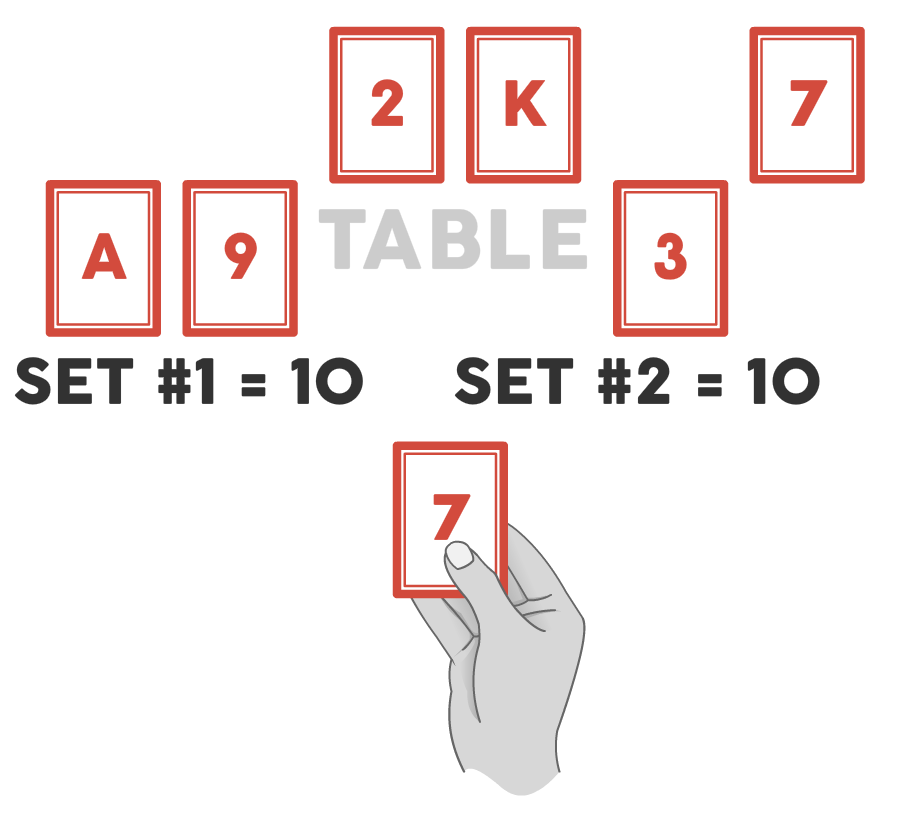

Alchemy is a math and pattern recognition game that can be played alone or with a friend. Alone the game is quite casual and a good time killer. With a friend, the game is fast paced and chaotic. The single player game lasts about 10 to 15 minutes, while a two player game lasts about 20 minutes.
Remove all Jokers from the deck. Shuffle the deck, and lay face-up in a line 6 cards on the table.
Draw a card. Using this card and at least 3 other cards in the line, you must create two sets of matches. The sets match if they have the same sum of card rank. Ace is 1, Jack is 11, Queen is 12, and King is 13.
When you find a match, discard all the matched cards and place enough cards face up on the table to have 6 cards. Draw another card, and repeat.
If you are unable to find a match, discard any one of the 6 cards and the card in your hand. Draw a new card. You now must match with only 5 cards in the line until the game is over. Remove another card each time you cannot match.
You win if you run out of cards in the draw pile. You lose if you still have cards in the draw pile, but are only allowed 2 cards face up on the table (thus making it impossible to create a matching set of 4 cards).
Remove all Jokers and royals (Jacks, Queens, and Kings) from the deck before play.
Only lay 4 cards face up on the table.
You can make a match using two or more cards (including the card in your hand).
The alternative version is easier, faster, but it also lowers the chance to win.
Remove all Jokers from the deck. Shuffle the deck, and lay face-up in a line 6 cards on the table.
Each player draws a card and puts it face down in front of him without looking at it. On the count of three, the players flip over the card. Using this card and at least 1 other card in the line, the players must create two sets of matches. The sets match if they have the same sum of card rank. Ace is 1, Jack is 11, Queen is 12, and King is 13.
When a player finds a match, he must quickly grab all the cards that made the match and move them towards his side of the table into a pile. That player verbally confirms the match to the other player. The other player now must make a match using the remaining cards. His match should be brought into a pile on his side of the table. If a player is unable to make a match or has taken a long time to find a match (over 20 seconds) the player discards his drawn card.
A player must discard his drawn card, put back any grabbed cards, and wait for the other player to make a match if:
Once both players are done with the round (either they have matched or were not able to make a match), new cards are added so that there are 6 cards on the table, each player draws a new card face down and the next round begins.
Once there is not enough cards left in the deck to have 6 face up cards in the line, the round has ended. Players should tally their points and keep track of them on a scoresheet:
Shuffle the deck and start another round. The first player to 100 points wins.
Add a Joker to the deck before shuffling.
If a Joker is drawn as one of the 6 cards on the table, replace the Joker with another card from the deck and put the Joker to the side. Players must now make a match of at least 5 cards total (including the card in their hand). If a player successfully makes a match, the Joker and all matched cards are added to his collection pile, and all remaining cards are discarded. If neither player can make a match, all the cards are discarded.
If a Joker is drawn as one of the Player’s card, that player must make a match of at least 4 cards from the line (excluding the drawn Joker since it cannot match). The other player can match as normal. If the player is unable to match with the Joker, it is discarded.
At the end of the round, the Joker is worth 10 points.
When a player reaches 75 points or more, add one or two additional Jokers to the deck.